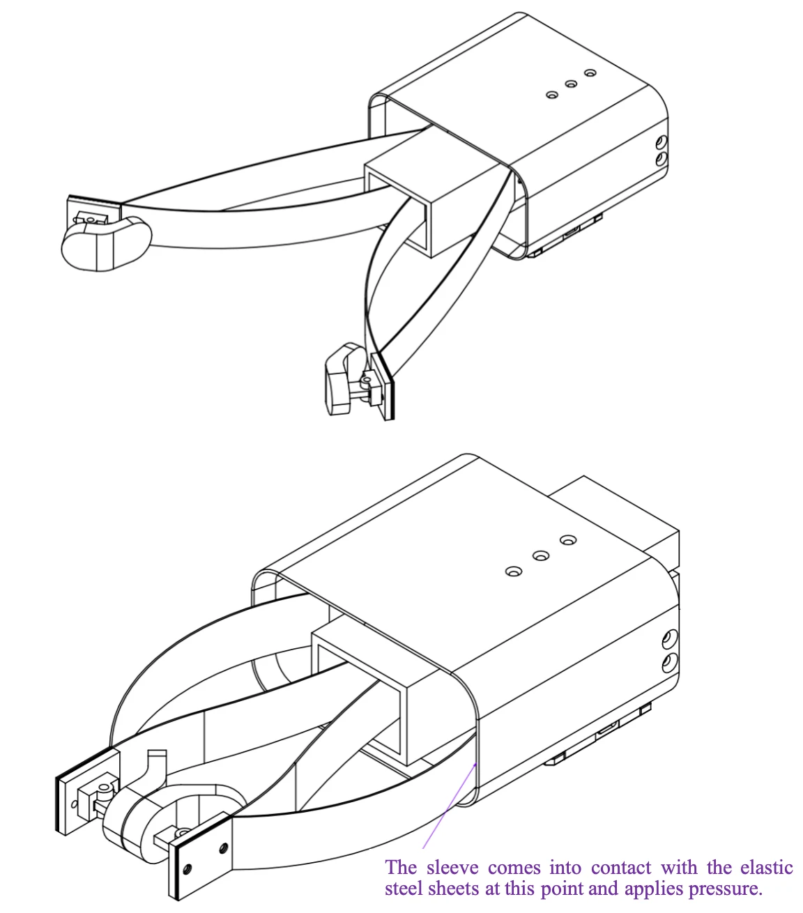
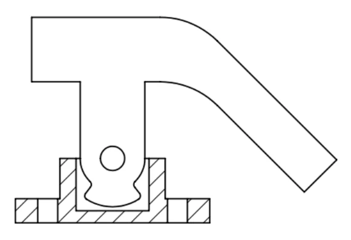

Chengdu Humanoid Robot Innovation Center · Internship · 2024
Flexible Gripper Concepts
Two concepts for preserving clamping force near full closure.

Sliding sleeve
The original flexible fingers provided limited clamping force on thin objects. In the first concept, a rack-driven sleeve engages the outside of the flexible fingers near full closure to redirect more of the motor force into the grasp. A pivoting dual-surface fingertip is designed to accommodate a range of object shapes.




Tendon routing
The second concept changes the tendon routing using additional pulleys. The new geometry redirects more of the cable tension toward closing the fingers when the gripper is nearly shut.
Yiwen Gao and Xuesi Ma · Household humanoid R&D team